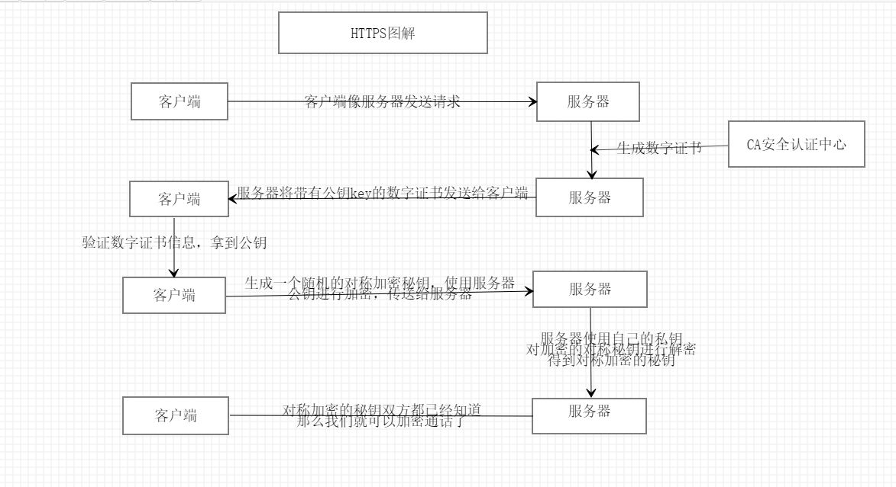

HTTPS
http超文本传输协议，所以的东西都是明文传输，容易被拦截，被攻击，我们希望能对通话内容进行加密，那么因此而生，出现了https
https：在http的基础上新增加了SSL层
先放图

// http 超文本传输协议
// https 加密的超文本传输协议
// 对称加密
浏览器生成一个秘钥，然后将秘钥传输给服务器，之后每次传输浏览器都使用该秘钥加数据加密传输给服务器
服务器使用得到的秘钥解密加密的数据，因为使用的是同一个秘钥所以称为对称加密
缺点 秘钥容易被截取，难么也相当于裸奔了
// 非对称加密算法 RSA
秘钥分成公钥和私钥 公钥是大家都知道的，私钥是要保存好，谁都不能告诉的。 经过公钥加密的数据，只有通过对应的私钥才能解密
浏览器有自己的公钥和私钥，服务器也有自己的公钥和私钥
1浏览器拿到服务器的公钥，将数据加密，传送给服务器，服务器用自己的私钥解密，拿到传输数据
2服务器也可以拿到浏览器的公钥，加数据加密，传输给浏览器，浏览器通过自己的私钥，将私钥解密，拿到服务器返回的数据
这样一来秘钥就不会被截取了，所以的信息也都加密了
缺点 RSA加密，比较慢，比对称加密慢个几百倍，所以需要改进
// 非对称加密和 对称加密结合
浏览器生成一个秘钥，将其作为数据，通过非对称加密传输给服务器，服务器通过自己的私钥，拿到这个对称加密的秘钥
之后数据传输我们就用对称加密，对称加密的秘钥也有了
完美了解决了，数据加密，也防止了秘钥被拦截 ，good
// 中间人攻击
中间人截取服务器给客户端发送的公钥，将中间人的公钥发给客户端，那么客户端用中间人的公钥加密的数据，就能被中间人解密，
中间人拿到服务器的公钥，加密数据传输给服务器，服务器也能拿到客户端的数据，并且毫无察觉，数据其实已经被截取了。
// 解决中间人攻击，也就是要确认对方身份信息
// CA 有信度的公正中心
服务器将自己的公钥，认证信息，其他消息，用hash算法生成 消息摘要
服务器将消息摘要找CA ，用ca的私钥对齐进行加密 生成数字签名
然后服务器将 公钥，认证信息，其他消息组合的混合消息和数字签名组合成数字证书，发送给客户端
然后客户端拿到该数字证书
客户端用相同的hash算法将混合消息生成消息摘要，
客户端拿到CA的公钥，将数字签名进行解密，得到服务器生成的消息摘要，进行对比，就知道有没有被串改
这要就完美的防止了中间人攻击
总结一下，https的整个过程
客户端像服务器发送请求
1.客户端想服务器请求公钥
2.服务器将数字证书，包括公钥key，数字签证(数字签证是通过CA私钥加密的)等信息 返回客户端
3.客户端验证服务器信息，通过CA的公钥解密数字签字，验证公钥key是否是服务器的，
4.客户端生成对称加密秘钥，通过服务器的公钥加密传输给服务器
5.服务器得到信息，通过自己的私钥，解密数据，得到对称加密的秘钥
6.双发都知道秘钥了，可以开始加密传输数据了